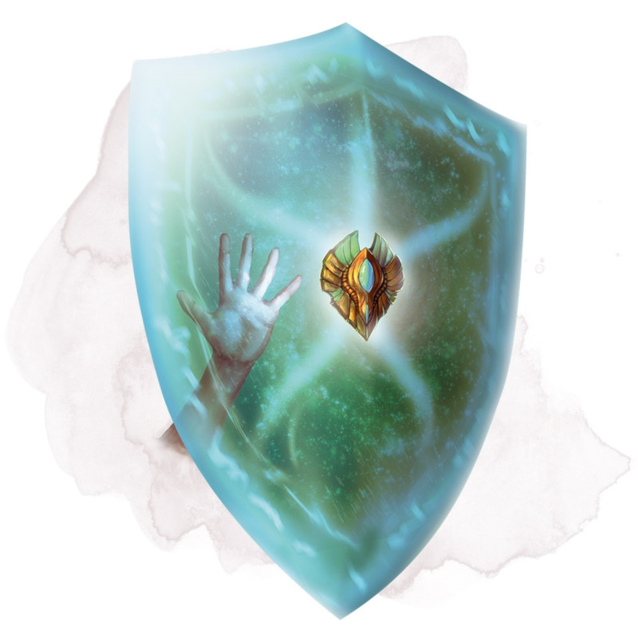

Bouclier animé
[ Animated Shield ]
Armure (bouclier), très rare (nécessite un lien)
Lorsque vous tenez ce bouclier, vous pouvez prononcer son mot de commande au prix d'une action bonus pour l'animer. Le bouclier saute alors en l'air et flotte dans votre espace pour vous protéger comme si vous le maniez, mais en vous laissant les mains libres. Le bouclier reste animé pendant 1 minute, jusqu'à ce que vous utilisiez une action bonus pour mettre fin à l'effet, ou jusqu'à ce que vous soyez incapable d'agir ou mort. Le bouclier tombe alors au sol ou dans une de vos mains si vous en avez une de libre.
Dungeon Master´s Guide (SRD)
